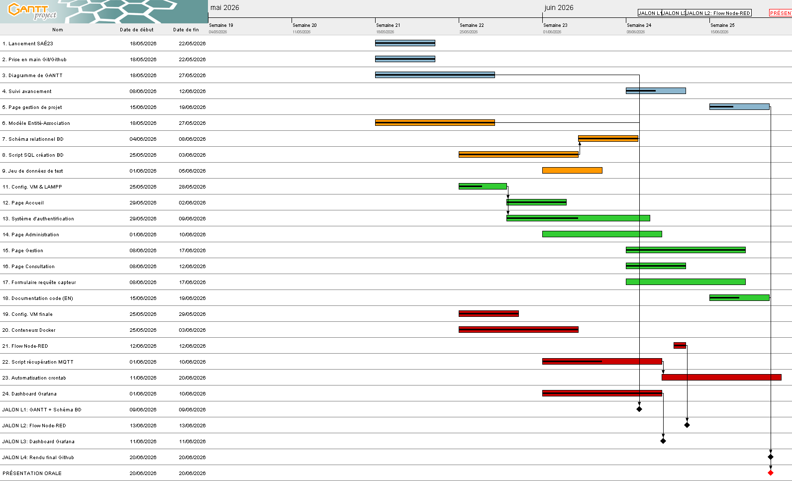

Eléments de gestion collective
Le diagramme de GANTT final

L'une des principales difficultés de cette SAÉ a résidé dans la gestion du temps et le respect des échéances des différents livrables, notamment entre les semaines 23 et 25. Le cumul du développement du site web dynamique, de la modélisation de la base de données MySQL et de l'intégration de la chaîne de traitement sous Docker en l'espace de quelques semaines a exigé un investissement de travail très intense.
Face à ce défi, notre équipe a su faire preuve d'adaptabilité et de cohésion, redoublant d'efforts lors des derniers jours pour finaliser l'intégration complète de la chaîne IoT avant la date limite du rendu final.
Les outils collaboratifs
GitHub

L'utilisation de GitHub a été essentielle pour centraliser notre code source et assurer le suivi des versions. Cet outil nous a permis de synchroniser nos espaces de travail locaux (sur nos machines virtuelles respectives) avec un dépôt distant, facilitant ainsi le travail collaboratif simultané et évitant tout conflit de versions lors du développement des scripts et des pages web
Google Docs et Google Drive

Google Drive a constitué un outil central de notre gestion documentaire en permettant de partager l'ensemble des livrables de notre groupe. Chaque membre a pu suivre en temps réel l'avancement des tâches des autres membres, facilitant ainsi la relecture et le perfectionnement continu des travaux avant leur rendu final.

Google Docs a été utilisé pour la rédaction de nos comptes rendus et rapports. Cet outil a grandement optimisé notre flux de travail en permettant des modifications simultanées, l'ajout de commentaires et un gain de temps précieux lors des phases de rédaction collective.
Les synthèses individuelles
Victor
Pour ma part, je me suis concentré sur toute la partie conteneurisation en mettant en place la chaîne Docker, l'objectif étant d'afficher sous forme de représentations graphiques les différentes températures relevées pour quatre salles de notre choix. Côté développement web, j'ai réalisé les pages de Gestion et d'Administration. J'ai également développé le script Bash de récupération des données, en m'appuyant sur la structure logique de notre script de SAÉ 15 (Traitement de données) réalisé au premier semestre. Ma principale difficulté a été de manipuler des outils et des commandes de programmation qui m'étaient encore vagues (PHP et MYSQL), mais j'ai su surmonter cela en effectuant des recherches sur Internet et en utilisant l'IA pour l'explication des relations entre mes pages dynamiques et la base de données. Plus spécifiquement, la configuration de la page d'administration pour gérer la base de données (ajout et suppression de salles) ainsi que le développement de la page de gestion pour n'afficher que les salles sélectionnées par l'admin ont représenté de vrais défis.
Clément
De mon côté, j'ai pris en charge la sécurisation de la plateforme en développant les pages de connexion (login) pour les espaces Administrateur et Gestionnaire en PHP. Il a fallu gérer les sessions utilisateurs pour restreindre correctement les accès. Même si l'intégration des formulaires et la vérification des identifiants dans la base de données ont demandé pas mal de rigueur pour éviter les bugs, cela m'a permis de concrétiser les notions de développement dynamique et de sécurité web. Pour surmonter ces difficultés de code, la solution a été de m'appuyer sur la structure des formulaires et le traitement de connexion étudiés lors de la ressource R209 (Initiation au développement web). Reprendre cette base solide m'a permis d'intégrer proprement les mécanismes de session PHP et de sécuriser les formulaires sans repartir de zéro.
Angelo
Durant cette SAÉ, j'ai pris en charge la réalisation de la page de Consultation. Pour y parvenir, je me suis appuyé sur les notions acquises dans la ressource R209 (Mise en forme d'une page web dynamique) ainsi que sur mon projet de SAÉ14 (page sémantique). En binôme avec Nura, j'ai également configuré la base de données MySQL sur PhpMyAdmin (en lien avec les ressources R207 et R209) en créant les structures de tables parfaitement adaptées à nos capteurs. Ma principale difficulté a été de lier proprement la base de données MySQL à ma page PHP, notamment pour afficher les mesures dynamiquement dans un tableau HTML sans fausser la mise en page.
Nura
Sur ce projet, j'ai travaillé en binôme avec Angelo sur la modélisation et la création de la base de données MySQL sous PhpMyAdmin. En parallèle, j'ai créé la structure globale du site en réalisant la page d'Accueil ainsi que la mise en page du compte rendu final. Afin de valider notre travail sans dépendre du réseau de l'IUT, j'ai développé le script de simulation locale. Le plus grand défi a été de formater précisément les données simulées pour qu'elles s'insèrent sans erreur dans MySQL. Pour résoudre ce problème d'automatisation, j'ai choisi d'adapter le script de génération de notre SAÉ 15. Cette réutilisation m'a permis de formater rapidement les chaînes de texte.
Conclusion
En conclusion, cette SAÉ 23 a constitué un projet formateur et complet. Malgré un calendrier exigeant et des défis techniques, notre équipe a pleinement réussi à répondre à l'ensemble du cahier des charges. La chaîne de traitement est aujourd'hui fonctionnelle, de la collecte (ou de la simulation) des données de température jusqu'à leur stockage en base MySQL et leur affichage sur notre interface web.
Il est à noter qu'un seul point n'a pas été abordé : la prise en compte de la "capacité" d'accueil maximale de chaque salle dans nos tables SQL. Cette valeur n'étant pas présente au sein du payload transmis par le broker MQTT et nous ne disposions pas de cette information pour chaque salle.
Notre principale marge de progression a résidé dans la gestion prévisionnelle des livrables. Face à plusieurs difficultés d'organisation internes et à la charge de travail accumulée sur certaines semaines, nous avons dû faire preuve d'adaptabilité. Il a été nécessaire de réadapter notre diagramme de GANTT et notre planning initial afin de redistribuer efficacement les tâches et de garantir le respect de la date de rendu final. Au-delà des compétences techniques acquises en réseau, en base de données et en développement (Docker, Bash, PHP), ce projet nous aura appris à mener un projet en équipe, à anticiper les imprévus et à réajuster notre organisation en temps réel pour mener à bien nos objectifs.